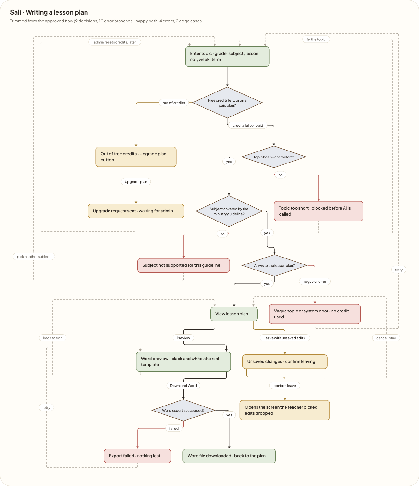
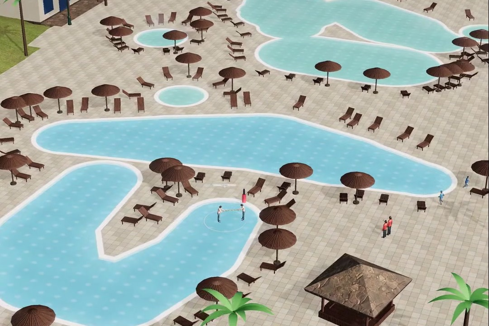

Hi, I'm Phạm Thùy LinhXin chào, tôi là Phạm Thùy Linh
I draw screens from
business rules.Tôi vẽ màn hình
từ quy tắc nghiệp vụ.
Every detail on the interface traces back to a rule, and every error branch gets its own screen.Mỗi chi tiết trên giao diện đều truy được về một quy tắc, và mỗi nhánh lỗi có một màn riêng.

Projects I'm proud ofNhững dự án tôi tâm đắc
Every state gets a screen of its own — empty, error, out of credit. Click any screen to see it large.Mỗi trạng thái một màn riêng — trống, lỗi, hết lượt. Bấm vào màn bất kỳ để xem lớn.
Sites that tell a storyNhững trang web biết kể chuyện
Four shop sites I came up with, designed and built. Each one plays like a short film.Bốn trang bán hàng tôi tự lên ý tưởng, thiết kế và dựng. Trang nào cũng tự chạy như một đoạn phim.
I set the concept and art direction and approved every scene; built with Claude Code. Product images are AI-generated, and the shops are concepts.Tôi lên ý tưởng, chỉ đạo hình ảnh và duyệt từng cảnh; dựng cùng Claude Code. Ảnh sản phẩm do AI tạo, các tiệm là ý tưởng giả định.
From rules to flow to screensTừ quy tắc đến luồng đến màn hình
Happy path first, then every place a person can get stuck. Trimmed to four errors and two edge cases.Luồng chính trước, rồi mọi chỗ người dùng có thể kẹt. Rút gọn còn bốn lỗi và hai trường hợp biên.


Swipe to see it all · Hover to read through the lens · Click to enlarge · Sali screens 09–10 come from it.Kéo ngang để xem hết · Rê chuột để soi kính lúp · Bấm để phóng to · Màn 09–10 của Sali đến từ luồng này.
Rules first, then flows, then pixels.Quy tắc trước, luồng sau, rồi mới đến pixel.
Ask before drawingHỏi trước khi vẽ
What's undecided, who decides, by when.Chưa ai quyết gì, ai quyết, hạn nào.
Map flows and statesVẽ luồng và trạng thái
Happy path first, then every error branch.Luồng chính trước, rồi mọi nhánh lỗi.
Wireframe from documentsWireframe từ tài liệu
AI drafts; flow and hierarchy are my calls.AI dựng nháp; luồng và thứ bậc do tôi quyết.
Working HTML prototypeBản chạy thử HTML
Tap through error, empty and offline.Tự bấm thử lỗi, trống, mất mạng.
Check against real dataĐối chiếu dữ liệu thật
One real lesson plan, one real book.Một giáo án thật, một cuốn sách thật.
Places I built in 3DNhững nơi tôi dựng 3D
For when a place has to be seen, not described. From Explore Phú Thọ: an 80-second video through 28 places, and two of the scenes I built.Dành cho lúc một địa điểm cần được nhìn thấy chứ không chỉ được mô tả. Từ Khám phá Phú Thọ: video 80 giây đi qua 28 điểm, và hai trong số các cảnh tôi dựng.


Also shipped as BA / POCũng đã làm với vai trò BA / PO
Discovery, specs and delivery — not visual design.Khai thác yêu cầu, đặc tả và triển khai — không phải thiết kế giao diện.
Metaverse — in-game checkout for a VR worldMetaverse — thanh toán vật phẩm trong thế giới VR
Specified the landing page, admin and in-game item payments; wireframes drawn with Figma MCP.Đặc tả landing page, trang admin và thanh toán vật phẩm trong game; wireframe dựng bằng Figma MCP.
Doctors' LMS — learning kept alive by friendly competitionLMS cho bác sĩ — học đều nhờ cơ chế thi đua
An online learning platform for doctors, owned end to end from requirements to UAT.Nền tảng học trực tuyến cho bác sĩ, tôi phụ trách từ phân tích yêu cầu đến nghiệm thu.
LumiAI — an AI agent for individuals & small teamsLumiAI — AI agent cho cá nhân và đội nhóm nhỏ
JTBD-led discovery, end-to-end specs and a RICE-lite roadmap built with the PO.Khai thác insight theo JTBD, đặc tả end-to-end, cùng PO xây roadmap theo RICE-lite.
I see a product as a system.Tôi nhìn sản phẩm như một hệ thống.
Product designer with three and a half years as a BA and PO behind me, for teams in Vietnam and Africa.Product designer, phía sau là ba năm rưỡi làm BA và PO cho các đội ở Việt Nam và châu Phi.
- TesterTester20222022
- BABA20232023
- POPO2025 — now2025 — nay
- Product designerProduct designerSali · LinHiêu
Tools I reach for every dayCông cụ tôi dùng mỗi ngày
Figma, AI, and 3D, with HTML to make it run.Figma, AI và 3D, cùng HTML để mọi thứ chạy được.
Hover or tap a tool to see what I use it for.Rê chuột hoặc chạm vào một công cụ để xem tôi dùng nó vào việc gì.
Designing LinHiêu's terminology assistantThiết kế trợ lý thuật ngữ cho LinHiêu
Day job: Product Owner at a corporate group.Công việc chính: Product Owner tại một tập đoàn.
Hà Nội · GMT+7
Products shipped for teams in Vietnam and Africa.Đã làm sản phẩm cho các đội ở Việt Nam và châu Phi.
I started out as a software tester.Tôi khởi đầu là tester phần mềm.
Banking & e-commerce QA at SMAC, then QA & BA at BestPrice — before BA, PO and design.Kiểm thử ngân hàng & thương mại điện tử ở SMAC, rồi Tester kiêm BA ở BestPrice — trước khi làm BA, PO và thiết kế.
Where I've workedNơi tôi đã làm
A few questions you might haveVài câu hỏi bạn có thể đang có
Pick a question and I'll answer it right here. For anything else, write to me.Chọn một câu hỏi, tôi trả lời ngay tại đây. Còn lại, cứ nhắn tôi.
Let's talk about your product.Kể tôi nghe về sản phẩm của bạn.
I'm looking for a product designer role in Hà Nội. If you'd like a closer look at any project here, write to me and I'll reply the same day.Tôi đang tìm vị trí product designer tại Hà Nội. Bạn muốn xem kỹ một dự án ở đây thì cứ nhắn tôi, tôi trả lời trong ngày.